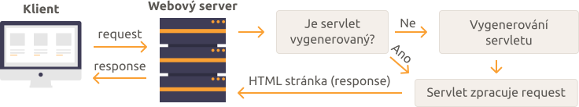
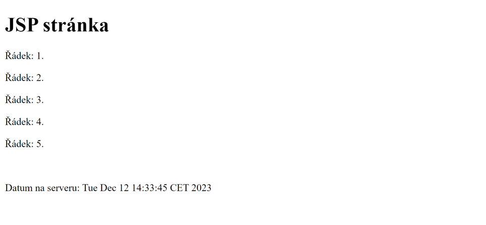

Úvod do JSP
V této části se pustíme do JSP (Java Server Pages). V podstatě se tu jen dozvíte co to je. Více do hloubky to začneme zkoumat až v dalších částech tutoriálu.
Co je JSP
JSP je zkratka pro Java Server Pages. Jedná se o technologii z Java EE, stejně jako servlety. Umožňuje kombinovat HTML s Java kódem a můžeme tak jednoduše vytvářet dynamické webové stránky.
JSP má se servlety mnoho společného, jelikož se ve výsledku jedná také o servlety. JSP soubory jsou totiž JSP containerem konvertovány do servletů než začnou zpracovávat requesty. To co jsme se naučili o servletech pro nás bude užitečné i u JSP. Jedná se vlastně o takový jiný způsob tvorby servletů, který je lepší, pokud chceme dynamicky vytvářet nějakou stránku než třeba zpracovávat nějaký formulář.
Request-Response cyklus
JSP soubory se konvertují na servlety. Můžeme s nimi tedy ze servletů komunikovat prostřednictvím request dispatcheru. Také ale nemusíme klasické servlety vytvářet vůbec a používat jen JSP. Když klient pošle request na JSP stránku, tak se zjistí, zda je JSP stránka již zkonvertována na servlet. Pokud není, tak se nejdříve zkonvertuje (vytvoří se servlet třída). Poté se servlet použije pro zpracování requestu a poslání response (HTML stránky).
Kam ukládat JSP soubory
JSP soubory se na serveru ukládají s koncovkou "jsp" do složky webapp. Pro vše co je ve složce webapp mohou uživatelé provést request a získat to. Tato složka slouží k uložení věcí jako jsou JavaScript soubory, CSS styly, obrázky, a tak podobně. Kromě těchto věcí tam můžeme umístit naše JSP soubory a uživatelé k nim budou mít přístup, aniž bychom něco mapovali v souboru web.xml. To ve většině případů ale nechceme. Alternativa může být ukládat je do podsložky WEB-INF spolu se souborem web.xml. K této složce totiž uživatelé přístup nemají. Až se začneme učit o MVC vzoru, tak to tak uděláme. Prozatím ale budeme JSP soubory ukládat mimo ni, abychom nemuseli mapování řešit.
Struktura JSP stránky
Jak jsem již psal, tak JSP je kombinací HTML a Java kódu. JSP stránka se skládá z HTML tagů a Java kódu uzavřeného speciálními tagy <% a %>. Tomuto kódu se říká scriplety. Kromě scripletů toho JSP podporuje ještě víc a později se s různými typy tagů seznámíme.
Abychom viděli jak vypadá jednoduchá JSP stránka, založíme si nový Maven projekt a vytvoříme si ji. Projekt můžeme pojmenovat třeba jako "uvod-do-jsp" a ve složce webapp vytvoříme třeba soubor stranka.jsp. Následující ukázka ukazuje kód, který si do tohoto souboru můžete zkopírovat. Zatím nemusíte moc chápat jak to funguje. Jde nám jen o to se podívat, jak vůbec JSP kód vypadá.
- src
- main
- java
- resources
- webapp
- test
- java
- resources
- main
- target
<project xmlns="http://maven.apache.org/POM/4.0.0" xmlns:xsi="http://www.w3.org/2001/XMLSchema-instance" xsi:schemaLocation="http://maven.apache.org/POM/4.0.0 https://maven.apache.org/xsd/maven-4.0.0.xsd">
<modelVersion>4.0.0</modelVersion>
<groupId>io.github.jirkasa</groupId>
<artifactId>uvod-do-jsp</artifactId>
<version>0.0.1-SNAPSHOT</version>
<packaging>war</packaging>
<name>uvod-do-jsp</name>
<properties>
<project.build.sourceEncoding>UTF-8</project.build.sourceEncoding>
<project.reporting.outputEncoding>UTF-8</project.reporting.outputEncoding>
<java.version>17</java.version>
<maven.compiler.source>${java.version}</maven.compiler.source>
<maven.compiler.target>${java.version}</maven.compiler.target>
</properties>
<dependencies>
<dependency>
<groupId>javax.servlet</groupId>
<artifactId>javax.servlet-api</artifactId>
<version>4.0.1</version>
<scope>provided</scope>
</dependency>
</dependencies>
</project><%@page contentType="text/html" pageEncoding="UTF-8"%>
<!DOCTYPE html>
<html>
<head>
<meta charset="UTF-8">
<title>Úvod do JSP</title>
</head>
<body>
<h1>JSP stránka</h1>
<% for (int i = 1; i <= 5; i++) { %>
<p>Řádek: <%= i %>.</p>
<% } %>
<br/>
<p>Datum na serveru: <%= new java.util.Date() %></p>
</body>
</html>Jak můžete v předchozí ukázce vidět, tak v JSP kódu můžeme třeba vytvořit for cyklus a vypsat několik elementů pod sebe, aniž bychom je kopírovali, nebo například můžeme vypsat na stránku serverový čas.
Jelikož máme JSP soubor přímo ve složce webapp (nemáme jej v podsložce WEB-INF), tak se k němu dostaneme i bez mapování ve web.xml. Pokud si otevřete http://localhost:8080/uvod-do-jsp/stranka.jsp, tak byste měli vidět stránku, kterou ukazuje následující obrázek.
Tato část byla jen takovým úvodem do JSP. Jen jste se dozvěděli co to JSP je, kde vytvářet JSP soubory a podívali jste se jak zhruba JSP kód vypadá. V příštích částech se o JSP dozvíte víc.